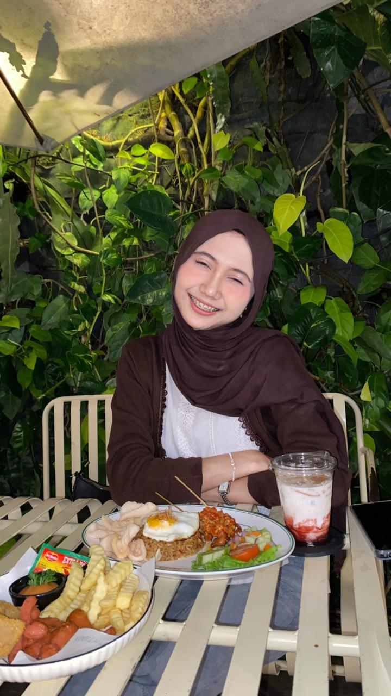

Contact
+62 812-5244-7480
annisa7@student.ub.ac.id
linkedin.com/in/fitri-nur-annisa
ftrnsav_
Education
2025 – 2029
Brawijaya University
Bachelor of Information Systems
Faculty of Computer Science
Skills
Critical Thinking & Analysis
Observation & Detail Orientation
FITRI NUR
ANNISA
an undergraduate student at Universitas Brawijaya
Professional Summary
Aspiring Data Analyst with a solid foundation in Java computational logic
and a TOEFL score of 543. Strong critical thinking and rapid data analysis
skills developed through debate competitions and KIRMAGO research,
complemented by extensive fieldwork experience.
Organizational & Research Activities
- Participated in greenhouse management project.
- Conducted Red Island Expedition to collect environmental data.
- Organized Camara Beach clean-up and conservation.
Achievement
2023
Scientific Olympiad
Regency-Level Debate (LDBI)
1st Place Winner
2024
Indonesian Debate Competition
Regency-Level Debate (LDBI)
1st Place Winner
2024
Islamic Education Debate Competition
2nd Runner-Up
2025
Golden English Proficiency Test
Score: 543 (GE-EPT)